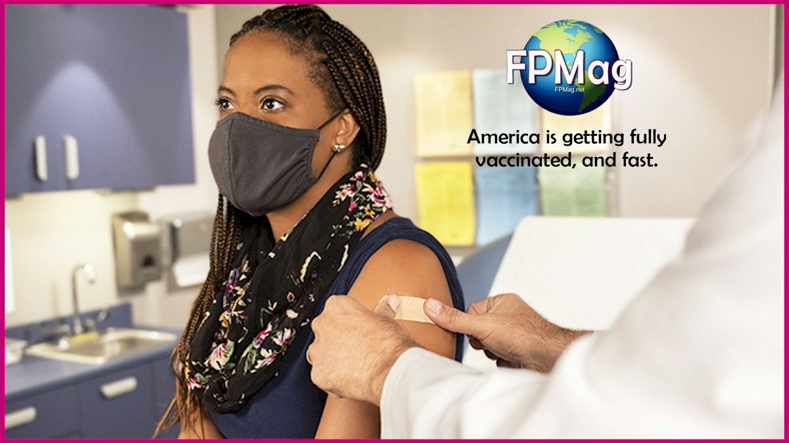
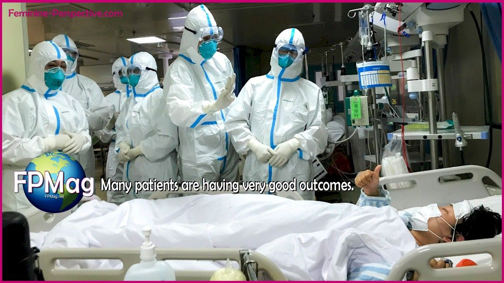
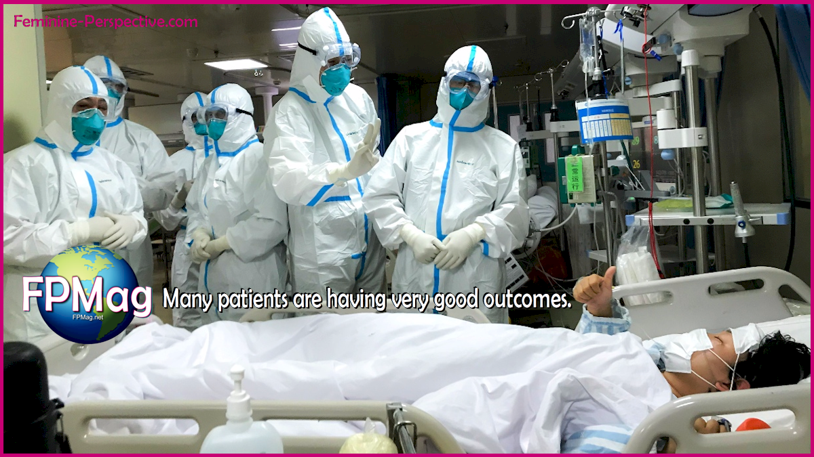
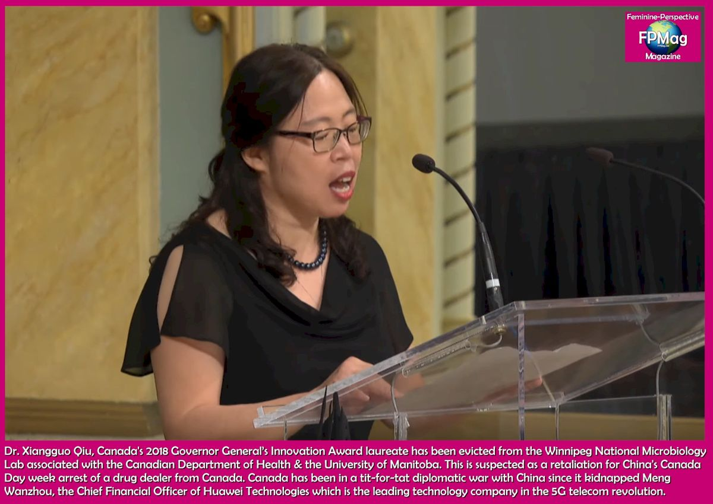
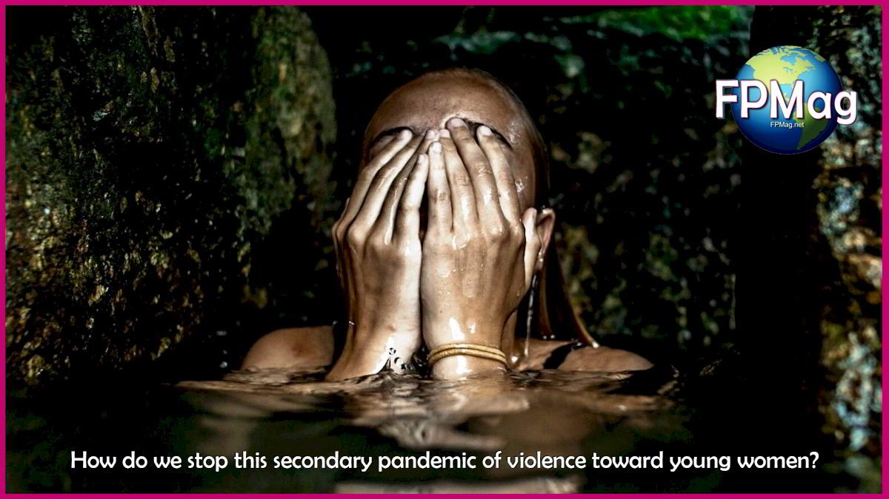
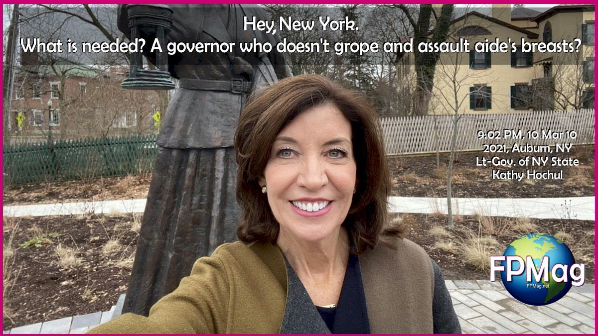
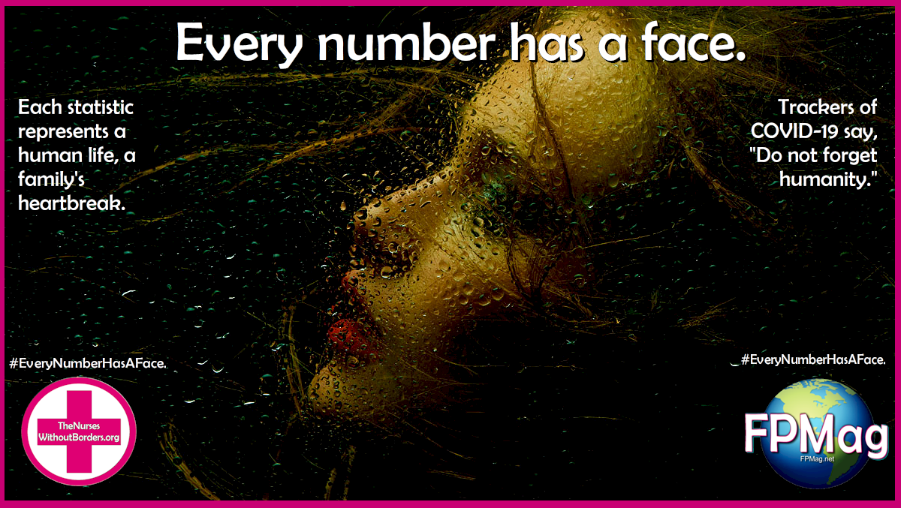
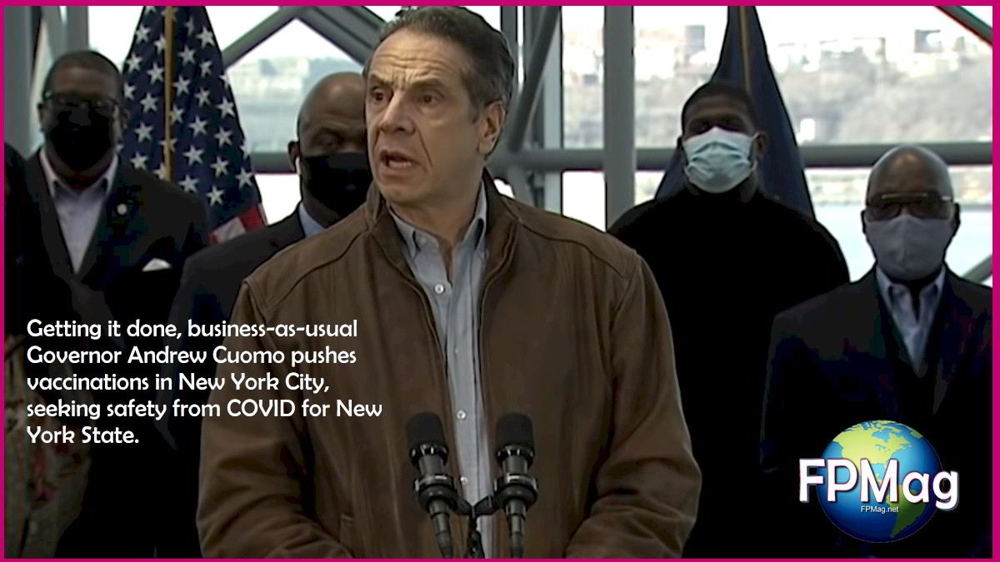

Is the nCoV a piece of a Biological Weapon that leaked?Canada may have some answers.
'The only thing that really matters is caring for patients and saving every life that can be saved,' say doctors and nurses.
The WHO has commended China for generously 'cooperating'.From a WHO statement published Friday, it appears that China’s government has genuine concern and considerable commitment of effort offering transparency and providing Chinese patients with an abundance of care, meanwhile taking authoritarian control over travel in the entire country.
Containment may be futile if the Hong Kong University estimates of the spread bear out to be fact.'This thing spreads like a wildfire,' notes a worried nurse in South Korea.

Photo Credit: China News Agency.Photo Art/Cropping/Enhancement: Rosa Yamamoto FPMag
Xi Jinping seems genuine.He could also be a President who may be furious at the jackass who screwed up and accidentally released a bioweapon.Xi is scrambling to mitigate a disaster he can predict better than anyone.He said this is 'gravely serious'.
Or he may be a president who seeks to end the wet markets that illegally sell rare live animals that could be infected with God knows what and spreading disease?Ending this practice may solve many problems including future coronaviruses.No bioweapon, this wet market of Wuhan is likely where the current infection comes from.The Wuhan market is a horrible place in the context of a world that needs to think veganism.
Chinese health authorities quickly posted in early January the full genome of the 2019-nCoV in public databases known as the US GenBank, a US National Institute of Heath genetic sequence database, and in the world’s
Global Initiative on Sharing All Influenza Data (GISAID) portal, another public database containing specific scientific descriptions of pathogens discovered.
Is this an accurate genome?Yes, presumably it should be as it can be compared to the genome the US Centre for Disease Control uploaded to its GenBank from the first reported case in the United States.That being the case, the three projects aimed at creating a vaccine will have the definitions they need.
On 23 January 2020 the nonprofit C
oalition for Epidemic Preparedness Innovations (CEPI) said it will give three companies a total of $12.5 million to develop 2019-CoV vaccines.
FPMag would not be publishing this article which is really a series of questions if this did not
have legs .
It is no less true no matter the source of the coronavirus that there may be as many as 45,000 infected patients at various stages in Hubei province of China and around the world yet nobody can explain how that happened in just one month.Those estimates come from the University of Hong Kong.
One more worry.Neither of the two warring sides, not China and not America are trusted anywhere on the planet at this point in time.It is entirely possible that their military escalations between them have caused this.
'Hence each country around the world needs to care for and trust its own patient’s blood and virology tests,' says Katie Alsop of the RINJ Foundation, a civil society group that operates medical units for women and children in war zones.
'People need to stay healthy and bolster their immune systems, she added.Some nurses FPMag interviewed share information on how to do that, here.
China has a massive bio-weapon programme as does the DPRK.and Russia.The three have been
hanging out
https://rinj.press/wp-content/uploads/2020/01/Feminine-Perspective-Magazine-FPMAG-China-Day4-Wuhan-hospital.mp4
In a series of tit-for-tat retaliations since Canada arrested Meng Wanzhou, Canada, guided by US intelligence, responded last year to yet another Canadian arrested in China during a
drug bust , by ejecting one of Canada’s scientists, her husband and her Chinese Students from a Winnipeg University bio-lab.
During attempts to contact the professor, FPMag was told 'don’t even try.'Qiu received an award from Gov.Gen.Julie Payette, at a ceremony at Rideau Hall in 2018, for being part of the team at the National Microbiology Lab that created the Ebola drug ZMapp.
Dr. Xiangguo Qiu is a foremost scientist in Canada and in China.America told Canada she must be spy.She is a scientist working in academia which doesn’t see borders the way the patriarch sees borders.In any case, she is gone as are many Canadian/Chinese geniuses from Canadian halls of academia, and its top-secret BSL-4 lab.
https://rinj.press/wp-content/uploads/2019/07/2018-Xiangguo-Qiu.mp4
Dr. Xiangguo Qiu Former Adjunct Professor, Department of Medical Microbiology, University of Manitoba
Head, Serology Diagnostic Unit, Special Pathogens Program, National Microbiology Laboratory Degrees:
M.D. (Hebei Medical University, China 1985),
MSc (Tianjin Medical University, 1990)
Publications:
For a recent list of publications from Dr. Qiu please click here. .1.Wong G, Richardson J, Cutts T, Qiu X and Kobinger GP.Intranasal immunization with an adenovirus vaccine protects guinea pigs from Ebola virus transmission by infected animals.Antiviral Res.2015 Jan 14;116C:17-19.doi: 10.1016/j.antiviral.2015.01.001.[Epub ahead of print] 2.Chowell D, Castillo-Chavez C, Krishna S, Qiu X and Anderson KS.Predicting the impact of detecting pre-symptomatic Ebola infections on the transmission dynamics of the 2014 West African outbreak.The Lancet Infectious Disease Vol 15 February 2015 3.Choi JH, Jonsson-Schmmunk K, Qiu X, Shedlock D, et al.A Single Dose Mucosal Recombinant Adenovirus-Based Vaccine Provides Long-Term Protection for Non-Human Primates from Lethal Ebola Infection.Molecular Pharmaceutics.2014 Nov 1.[Epub ahead of print] DOI: 10.1021/mp500646d 4.Wong G, Qiu X, Richardson J, Cutts T, et al.Ebola virus transmission in guinea pigs.J Virol.2014 Nov 12.pii: JVI.02836-14.[Epub ahead of print] 5.Murin DM, Fusco ML, Bornholdt ZA, Qiu X, et al.Structures of protective antibodies reveal sites of vulnerability on Ebola virus..Proc Natl Acad Sci U S A.2014 Nov 17.pii: 201414164.[Epub ahead of print] 6.Audet J, Wong G, Wang H, Lu G, Gao GF, Kobinger GP and Qiu X.Molecular Characterization of the Monoclonal Antibodies Composing ZMAb: A Protective Cocktail Against Ebola Virus.Sci Rep.2014 Nov 6; 4:6881.doi: 10.1038/srep06881.7.Wiliams K, Qiu X, Fernando L, Steven JM and Alimonti J.VSV?G/EBOV GP-induced Innate Protection Enhances NK Cell Activity to Increase Survival in a Lethal MA-EBOV Infection.Viral Immunol.2014 Dec 10.[Epub ahead of print] 8.de La Vega M, Wong G, Kobinger GK and Qiu X.The Multiple Roles of sGP in Ebola Pathogenesis.Viral Immunol.2014 Oct 29.[Epub ahead of print] 9.Qiu X, Wong G, et al Reversion of advanced Ebola virus disease in nonhuman primates treated with ZMappTM.Nature.2014 Aug 29.doi:10.1038/nature13777.[Epub ahead of print] 10.Wong G, Audet J, Fernando L, Fauster-Bovendo H, Alimonti JB, Kobinger GP and Qiu X.Immunization with vesicular stomatitis vaccine expressing the Ebola glycoprotein provides sustained long-term protection in rodents.Vaccine.32 (2014) 5722-5729
Posted On: 2021-03-16T00:01:00
Posted By: Micheal John







Content Date: 2021-03-16
Download Date: 2021-03-17
Document ID: L0C04992H